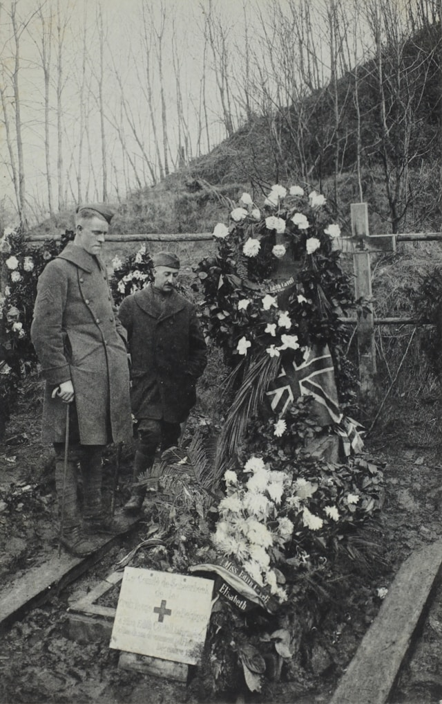

World War I (1914-1918)

World War I, also known as the Great War, lasted from 1914 to 1918. It involved many of the world's great powers, divided into two opposing alliances: the Allies and the Central Powers.
The war was characterized by trench warfare, where soldiers faced horrendous conditions, and it saw significant military innovations, including tanks, aircraft, and chemical weapons.
World War II (1939-1945)
World War II lasted from 1939 to 1945 and was the deadliest conflict in human history, involving over 100 million people from more than 30 countries.
The war was marked by significant events such as the Holocaust, the use of nuclear weapons, and large-scale battles like Stalingrad and Normandy.
Causes of the World Wars
World War I
- Militarism: The arms race and military alliances created tensions.
- Alliances: Entangling alliances between major powers escalated regional conflicts.
- Imperialism: Competition for colonies and global dominance.
- Nationalism: Nationalistic fervor fueled conflicts, particularly in the Balkans.
World War II
- Treaty of Versailles: Harsh penalties imposed on Germany led to resentment.
- Expansionism: Aggressive expansion by Axis powers (Germany, Italy, Japan).
- Failure of the League of Nations: Ineffective in preventing aggression.
- Economic Instability: The Great Depression contributed to political instability.
Life During World War I
Life during World War I was marked by significant hardship and changes:
- Frontline Soldiers: Soldiers lived in trench conditions, facing mud, rats, and diseases. They often suffered from shell shock (now known as PTSD) due to the constant bombardment and stress.
- Civilians: Many civilians faced food shortages, rationing, and the threat of air raids. Women began to enter the workforce in unprecedented numbers, taking on roles in factories, agriculture, and nursing.
- Propaganda: Governments used propaganda to boost morale and support for the war, influencing public opinion and encouraging enlistment.
- Social Changes: The war led to changes in social structures, including shifts in class dynamics and the role of women in society.
Life During World War II
World War II further intensified the struggles faced by people globally:
- Wartime Economy: Many nations shifted to a wartime economy, focusing on producing weapons and supplies. Rationing became common, affecting everyday life.
- Women’s Roles: Women played critical roles in the workforce and military, with organizations like the Women's Army Corps (WAC) in the U.S. and similar groups in other countries.
- Displacement and Refugees: Millions were displaced due to the war, with many fleeing from conflict zones, leading to significant refugee crises.
- Holocaust and Atrocities: The war saw horrific events, including the Holocaust, where six million Jews and millions of others were systematically exterminated.
Impact & Legacy
Both World Wars had profound effects on the world:
- Shift in global power dynamics, leading to the Cold War.
- Formation of the United Nations to promote peace and prevent future conflicts.
- Decolonization movements across Asia and Africa as colonial powers weakened.
- Significant technological advancements and military innovations.
- Human rights movements influenced by the atrocities of the wars, leading to declarations and conventions aimed at protecting rights globally.
About This Website
This website aims to provide comprehensive information about the causes, events, and impacts of World War I and II. It serves as an educational resource for those interested in understanding these pivotal moments in history.